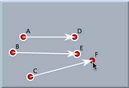
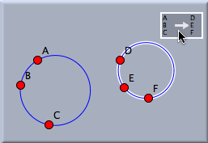

メビウス変換
シンデレラで可能な、数学的にもっとも興味深い変換はメビウス変換でしょう。 これは円と線をまた円と線へと写す性質をもつ変換です。
回転,
平行移動,あるいは
相似変換 はメビウス変換の特別な場合として考えることができます。一方、
アフィン変換 や
射影変換 はそうではありません。
メビウス変換は３つのもとの像と現在の像の組によって定義されます。 シンデレラでのメビウス変換の定義は
相似変換 と似ています。４つの点ではなく、６つの点が必要ですが。
次の２つの図はメビウス変換のもとでどのように円が写されるかを説明したものです。 図でのメビウス変換は
A → D,
B → E,
C → F と写すので、円周上の点
A, B, C は同じく円周上の点
D, E, Fに写されます。
 | |
 |
| メビウス変換の定義 | |
円を写す |
もしメビウス変換を繰り返すと、写された図の列は数学的にも美学的にもとても興味深い、一般的には対数螺旋と考えられる模様を形づくります。 次の図は１つの円とその中心に適用され繰り返されたメビウス変換の結果を示しています。
メビウス変換は通常２つの全く異なった定点を持ちます。 上の図で、これらの定点は点Aと点Bをそれぞれ自分自身へ写す変換によって明示的に作られています。
次も参照してください
(磯部)